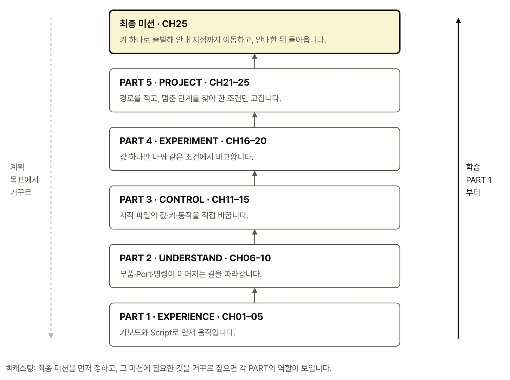

전체 목차

프롤로그와 이 책의 사용법, 시작하기를 거쳐 5개 PART·25개 CHAPTER로 이어집니다. 각 CHAPTER는 세 개의 실습 절로 구성됩니다.
시작 전
- 프롤로그
로봇을 움직이는 순간부터 피지컬 AI는 시작됩니다 - 이 책의 사용법
먼저 움직이고, 이유를 찾고, 코드로 확장합니다 - 이 책을 따라 하는 데 필요한 것
- 시작하기
RoboCo 실습 환경 준비
PART 1 · EXPERIENCE
직접 움직여 보기
Controls Mapping으로 직접 조종한 뒤 같은 키를 Script 로봇으로 옮겨 봅니다. 속도와 지형에 따른 차이, Text Screen·LED 반응을 확인하고 사람이 조종하는 첫 안내 미션을 수행합니다.
- CHAPTER 01. Controls Mapping으로 로봇을 어떻게 움직일까
1.1 W·S 전진·후진 — 움직임과 정지
1.2 A·D 방향 전환과 Z·C 제자리 회전
1.3 1번 키 Toggle Screen — 펼침과 접힘 - CHAPTER 02. 같은 키를 Script로 제어하면 무엇이 달라질까
2.1 Controls Mapping UI·제공 시작 파일 실행과 0번 Reset All
2.2 W·S·A·D·Z·C 입력과 Script 주행
2.3 Q·E 입력과 좌우 대각선 이동 - CHAPTER 03. 출력 비율과 지형에 따라 움직임은 어떻게 달라질까
3.1 키마다 다른 출력 비율과 움직임 변화
3.2 평지와 경사로에서 달라지는 주행
3.3 턱·계단·컨베이어 주변의 통과 경로 탐색 - CHAPTER 04. 키 입력과 로봇의 반응은 어떻게 보일까
4.1 1번 키 입력과 화면 펼침·접힘
4.2 Controls Mapping의 Input LED Pulse와 시작 파일의 LED Color
4.3 Text Screen의 4줄 상태 정보와 안내 문구 - CHAPTER 05. 찾아가서 안내하고 다시 돌아올 수 있을까
5.1 Sandbox에서 안내 장소와 출발 위치 선택
5.2 방향 전환·제자리 회전·대각선 이동으로 목표 지점 접근
5.3 정지→화면 전개→안내→수납→복귀 첫 미션
PART 2 · UNDERSTAND
움직임의 구조 이해
구동축과 조향축, FL·FR·RL·RR의 Port 번호, Controls 경로와 Script 경로, 모터 명령과 실제 움직임의 차이를 로봇 그림과 Port 맵으로 추적합니다.
- CHAPTER 06. 바퀴를 굴리는 모터와 방향을 바꾸는 모터는 무엇이 다를까
6.1 바퀴 회전과 조향축 회전의 차이
6.2 회전축을 바라보는 방향과 CW·CCW
6.3 Steering Servo와 Screen-Fold Servo의 축·연결 구조 - CHAPTER 07. 비슷한 모터가 여러 개일 때 원하는 부품을 어떻게 찾을까
7.1 화면의 부품 목록과 실제 로봇 부품 대응
7.2 FL·FR·RL·RR 위치와 Port 번호
7.3 표시 이름·API Class·Port로 제어 대상 구분 - CHAPTER 08. 같은 W 키가 두 로봇에서는 어떻게 다르게 전달될까
8.1 로봇1 — W→Controls Mapping→DC Motor·Input LED
8.2 로봇2 — W→Input LED Pulse와 W→Script→DC Motor·LED Color
8.3 Controls Mapping·RoboCo API·Educational Library의 역할 구분 - CHAPTER 09. 모터 명령과 실제 움직임은 왜 다를까
9.1 전진·후진과 spin(power)의 부호·출력 비율
9.2 좌우 DC Motor의 장착 방향과 바퀴 회전 방향
9.3 Target RPM·Torque·접지가 실제 움직임에 만드는 차이 - CHAPTER 10. 네 바퀴의 방향을 조합하면 어떤 움직임이 만들어질까
10.1 W·S 기본 주행과 A·D 방향 전환
10.2 Z·C 제자리 회전 — 바퀴별 45° 조향과 구동 방향
10.3 Q·E 대각선 이동 — 네 바퀴의 ±45° 평행 정렬
PART 3 · CONTROL
값과 동작 제어
시작 파일 c01_start.py의 값을 직접 바꾸고, 키 입력 처리·네 DC Motor 묶음·Servo 제한각·LOG 기록을 Educational Library에서 한 단계씩 열어 봅니다.
- CHAPTER 11. 코드에서 가장 먼저 바꿔 볼 값은 무엇일까
11.1 숫자·문자열·참거짓으로 표현하는 로봇 설정
11.2 처음 준비되는 코드와 반복 실행되는 코드
11.3 Controls의 LED Pulse를 유지하면서 시작 파일의 LED Color 변경 - CHAPTER 12. 키 입력을 Script에서는 어떻게 읽을까
12.1 키의 누름·해제와 가장 나중 키 우선
12.2 W·S·A·D·Z·C·Q·E 입력과 주행 동작 연결
12.3 1번 키 한 번 누름과 화면 목표 상태 한 번 전환 - CHAPTER 13. 네 DC Motor를 하나의 주행 기능으로 어떻게 묶을까
13.1 FL·FR·RL·RR Port로 Reference 생성과 재사용
13.2 DC Motor 주행 함수와 제공 조향 함수로 WASDZCQE 동작 구성
13.3 spin(0)·stop()·Script 구동 신호 해제의 차이 - CHAPTER 14. 바퀴와 화면의 움직임 범위는 어떻게 정할까
14.1 0° 기준과 CCW·CW 제한각
14.2 (ccw, cw) 순서와 바퀴별 목표 각도 부호
14.3 주행 자세와 Screen-Fold Servo의 펼침·접힘 목표 각도 - CHAPTER 15. 로봇이 지금 무엇을 하는지 어떻게 알 수 있을까
15.1 시작·입력·상태 변경·오류를 콘솔에 기록
15.2 시작 파일이 읽은 입력과 현재 명령을 Text Screen에 표시
15.3 상태 변화만 기록하고 종료 시 Script 신호 정리
PART 4 · EXPERIMENT
조건 변경과 결과 비교
2·3·4 키로 바퀴 모터 설정 네 가지(Target RPM·가속 시간·제동력·제동 시간)를 10단계로 바꾸고 같은 조건에서 변경 전후를 비교합니다. 직접 조종과 Script 제어의 결과도 나란히 기록합니다.
- CHAPTER 16. 어떤 조건을 같게 두어야 공정하게 비교할 수 있을까
16.1 2번 키로 실험 모드 시작과 기준 실행 조건
16.2 3·4 키로 Acceleration Time 한 단계씩 바꿔 비교
16.3 화면·LOG로 단계값과 변경 전후 기록 - CHAPTER 17. 더 빠르게 돌리면 오르막도 더 잘 오를까
17.1 경사로에서 바퀴 멈춤과 헛돎 구분
17.2 실험 키로 spin(power) 출력 비율과 Target RPM을 각각 변경해 비교
17.3 실험 키로 Max Torque를 바꾸며 경사로 주행 결과 비교 - CHAPTER 18. 조향이 이상하거나 차체가 흔들릴 때 어디부터 확인해야 할까
18.1 실험 키로 시간차 조향과 천천히 0° 복귀 비교
18.2 조향 원점·Flip 설정·명령 부호와 중복 반전
18.3 CCW·CW 제한각과 부품 간섭으로 달라지는 조향 범위 - CHAPTER 19. 정지 명령을 보냈는데 왜 더 움직일까
19.1 Script 구동 신호가 남은 경우와 관성의 차이
19.2 실험 키로 Max Brake Force와 Braking Time을 하나씩 변경
19.3 같은 조건 반복 실행과 정지 위치 오차 비교 - CHAPTER 20. 직접 조종과 Script 제어는 결과가 어떻게 다를까
20.1 같은 출발점과 같은 경로로 로봇1·로봇2 실행
20.2 반복 실행에서 경로·정지 위치·조작 차이 기록
20.3 즉석 조종과 반복 가능한 Script 제어가 각각 유리한 상황 비교
PART 5 · PROJECT
미션 완성 및 개선
MISSION_ROUTE에 이동 순서를 적고 WAIT → MOVE → GUIDE → RETURN 상태 흐름으로 이동·안내·복귀 미션을 완성합니다. 결과가 어긋나면 LOG에서 멈춘 단계를 찾아 한 조건만 고칩니다.
- CHAPTER 21. 누구에게 무엇을 안내할 로봇인가
21.1 장소 안내·행사 알림·작업 지점 표시 중 미션 선택
21.2 Sandbox의 출발점·안내 지점·이동 경로 설계
21.3 도착 위치·차체 방향·안내 문구·복귀를 완료 조건으로 정의 - CHAPTER 22. 이동·회전·정지를 하나의 경로로 어떻게 묶을까
22.1 키 입력 Script로 미션 경로 먼저 주행
22.2 MISSION_ROUTE 리스트로 이동 동작의 실행 순서 구성
22.3 실행 시간과 사용자 중단으로 이동 범위 관리 - CHAPTER 23. 이동과 안내를 하나의 상태 흐름으로 어떻게 연결할까
23.1 대기·이동·안내·복귀 상태 구성
23.2 자동 실행의 화면 펼침·접힘과 키 입력 Toggle 구분
23.3 시간 명령 실행 완료와 실제 목적지 도착의 차이 - CHAPTER 24. 엉뚱하게 움직여도 다시 시작할 수 있을까
24.1 로봇 파일·Input·Port·Motor 설정 순서로 원인 추적
24.2 콘솔 LOG와 Text Screen에서 멈춘 단계 찾기
24.3 실행 중단→Script 신호 해제→초기 상태 복원→재실행 - CHAPTER 25. 이동 안내 로봇 최종 미션
25.1 출발→이동→방향 맞춤→화면 안내→수납→복귀 전체 실행
25.2 가장 큰 실패 원인 하나를 찾아 한 조건만 수정
25.3 다시 실행해 성공 여부를 확인하고 다른 장소로 미션 확장
에필로그
움직이는 로봇에서 감지하고 판단하는 로봇으로
부록
- A. 실습 로봇 파일·Script·Library·Version 안내
- B. 확정 키 이름과 Controls Mapping 대응표
- C. Port·바퀴 방향·조향 원점 대응표
- D. DC Motor·Servo Motor 설정과 API 속성
- E. RoboCo API와 저자 Educational Library 찾아보기
- F. 로봇 제어에 필요한 Python 문법
- G. Text Screen·Input LED·콘솔 LOG 표시 기준
- H. 실행 오류와 복구 안내
- I. 설정값 비교 기록과 미션 확인 양식
- J. 처음 보는 용어와 단위 빠른 찾아보기